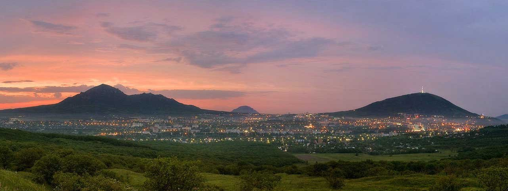

10 сентября 2022 года город отметил 242-ю годовщину со дня основания
Пятигорск расположен на Минераловодской предгорной равнине (часть предгорий Большого Кавказа) широко раскинулся на берегах реки Подкумок,
по юго-западным, южным и северным склонам у подошвы горы Машук, на высоте 500—600 м над уровнем моря, а также южному подножью горы Бештау.
 В черте города находятся гора Машук (993,7 м, с уставленной на ней 112-метровой телеретрансляционной вышкой,
к которой ведёт канатная дорога) и её отроги — горы Горячая (557,9 м) и Казачка (633 м), а также горы Дубровка (690,6 м), Пикет (565,3 м),
Пост (556 м) и др.
В черте города находятся гора Машук (993,7 м, с уставленной на ней 112-метровой телеретрансляционной вышкой,
к которой ведёт канатная дорога) и её отроги — горы Горячая (557,9 м) и Казачка (633 м), а также горы Дубровка (690,6 м), Пикет (565,3 м),
Пост (556 м) и др.
 Высочайшая точка в окрестностях города — вершина горы Бештау (1401,2 м).
С высоты её пяти вершин открывается панорама курорта, видны почти все города-курорты, горы расположенные поблизости,
Эльбрус и горная цепь главного Кавказского хребта.
Высочайшая точка в окрестностях города — вершина горы Бештау (1401,2 м).
С высоты её пяти вершин открывается панорама курорта, видны почти все города-курорты, горы расположенные поблизости,
Эльбрус и горная цепь главного Кавказского хребта.
 Эльбрус — самая высокая горная вершина России и Европы.
Эльбрус включён в список высочайших вершин частей света «Семь вершин».
Талая вода ледников, стекающих с его склонов, питает одни из наиболее крупных рек Северного Кавказа:
Кубань, Малку и Баксан. За счёт хорошо развитой транспортной и сопутствующей инфраструктуры
Эльбрус и прилегающие к нему районы очень популярны в рекреационном, спортивном, туристическом и
альпинистском плане. На седловине Эльбруса (5416 м), разделяющей его Восточную (5621 метров) и Западную (5642 метров) вершины,
расположен самый высокогорный приют Кавказа.
Эльбрус — самая высокая горная вершина России и Европы.
Эльбрус включён в список высочайших вершин частей света «Семь вершин».
Талая вода ледников, стекающих с его склонов, питает одни из наиболее крупных рек Северного Кавказа:
Кубань, Малку и Баксан. За счёт хорошо развитой транспортной и сопутствующей инфраструктуры
Эльбрус и прилегающие к нему районы очень популярны в рекреационном, спортивном, туристическом и
альпинистском плане. На седловине Эльбруса (5416 м), разделяющей его Восточную (5621 метров) и Западную (5642 метров) вершины,
расположен самый высокогорный приют Кавказа.
| название горы |
высота над уровнем моря |
| Машук |
993,7 |
| Бештау |
1401,2 |
| Эльбрус |
5642 |